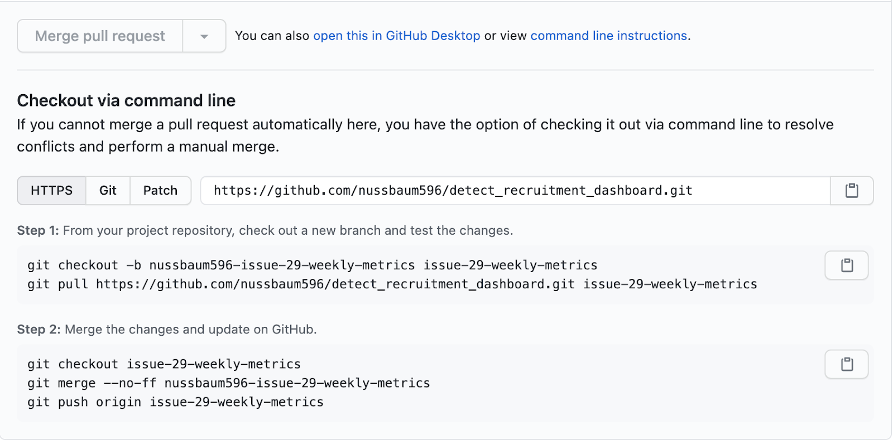

17 Git and GitHub
17.1 ⭐️Overview
This chapter is about using Git and GitHub to collaborate.
The goal is not to make you a git expert — I’m not a git expert myself. Instead, the goal is to teach you enough git to work with me and my team on research projects. I will also provide you with some additional resources in case you want to become an expert.
17.2 🌎Useful websites
17.3 Get rid of .DS_Store
The .DS_Store file can be an annoyance when working with Git on MacOS. Here is a link to instructions for removing .DS_Store from your repository. Do it early and never worry about it again.
In the terminal, run the following code from the root directory:
# Remove existing files from the repository:
find . -name "*.DS_Store" -type f -exec git-rm {} \;# Add .DS_Store to .gitignore
echo .DS_Store >> .gitignore# Commit the file to the repo
git add .gitignore
git commit -m '.DS_Store banished!'17.4 Amend
- Edit -> commit -> edit -> amend -> commit = no problem!
- Edit -> commit -> push -> edit -> amend -> commit -> push = problem!
- Short answer, don’t do it.
- Adding more chages to your last commit
17.5 Pull Requests
- Instructions for leaving comments
- Very simple merge conflicts can be resolved directly on GitHub.com
- Use command line instructions to try out the code to resolve more complex merge conflicts.
Example command line pull request merge conflict 
If there are already changes on the branch (so you can’t pull), you need to either:
- Commit the changes on the branch (if you want to keep them)
- Throw away local changes with git checkout -f, and then remove untracked files with git clean -fd
17.6 Branches
Naming convention: issue-#-short-description
Basic workflow:
- Create new branch - never develop on Master
- Push new branch to remote
- Do some work - commit - amend - push along the way
- When work is done, create a pull request for Master
- Deal with merge conflicts if they exist, and merge into Master
- Delete development branch
Merging specific files from another branch.
Also, if you haven’t committed the files you don’t want to move over yet:
- Commit just the files you DO want to merge into master.
- Push
- Create a request to pull the changes you just committed into the master branch.
- Don’t delete the issue branch. Just continue working on the files you don’t commit and merge with the pull request.